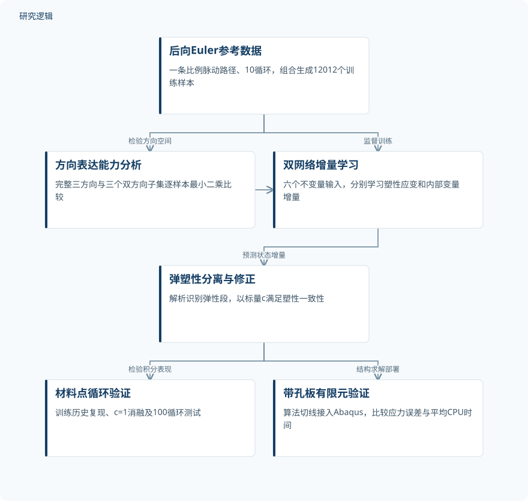
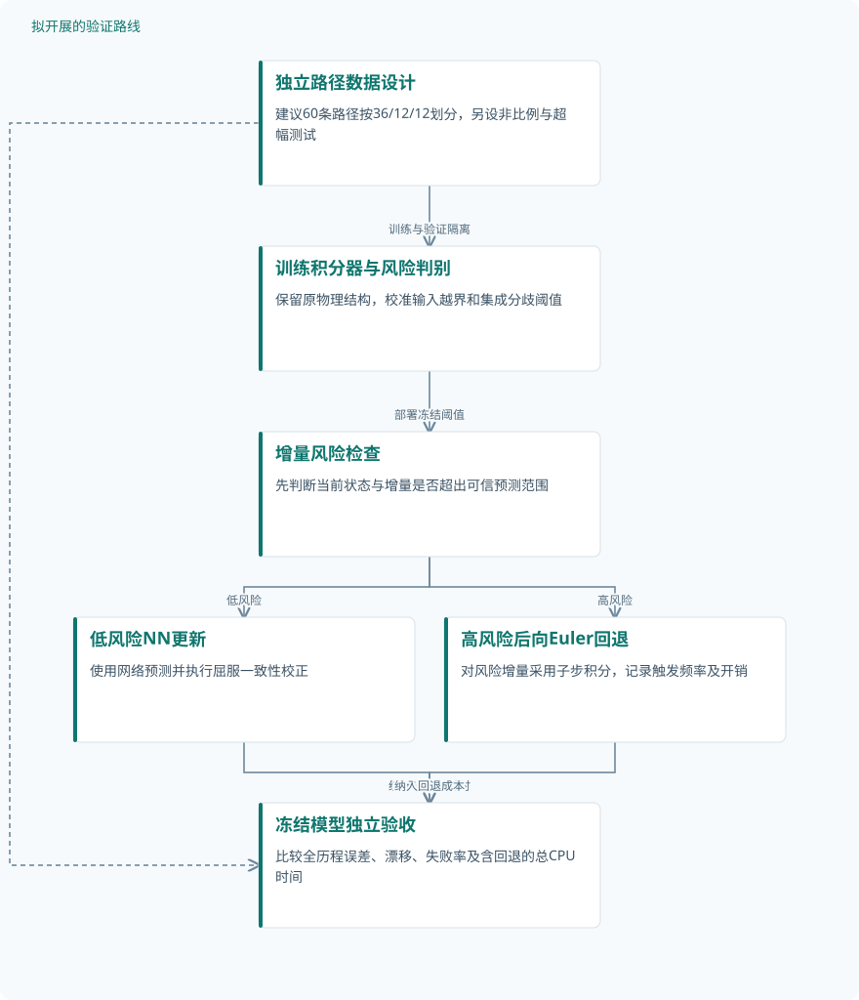

论文精读
机器学习加速塑性模型的时间积分
Machine learning-accelerated time integration of plasticity models
精读更新 2026-10-08 11:57 · 依据论文全文整理
塑性有限元的耗时，常隐藏在每个积分点反复求解的状态变量更新中。Talebi等提出让神经网络学习时间积分增量，而非替换整个本构模型，并用解析构造保留弹塑性切换与屈服一致性。在带孔板百循环算例中，该方法相对误差相近的后向Euler配置约加速3.3倍。本文的阅读价值，在于看清物理约束如何支撑大增量计算，以及这种加速距离可靠的跨路径应用还有多远。
文章目录
加速的对象是积分过程，而不是材料定律
非线性材料计算需要在每个时间步、每次平衡迭代的各积分点求解耦合微分代数方程。前向Euler通常依赖小步长维持稳健性，后向Euler允许较大步长，却需要非线性迭代。本文选择保留材料模型，让网络直接预测内部状态增量，针对的是反复调用本构积分器的计算负担。
研究限定于小应变、率无关塑性，采用von Mises屈服与非线性随动硬化原型。已核实的Armstrong–Frederick模型参数为E=200 GPa、G=75 GPa、Y₀=400 MPa、Hkin=150 GPa、β∞=500 MPa。参数受R260珠光体钢轨钢标定结果启发，但训练来源仍是数值解，不能等同于实物验证。
标量网络、张量方向与屈服面校正协同更新
积分器先计算弹性试应力，弹性状态不更新塑性变量；遇到卸载或弹塑性转换，则解析确定弹性子步比例s，只对剩余塑性增量调用网络。输入为试应力偏量、弹性极限应力偏量和旧背应力构成的六个二次不变量。网络输出三个标量权重，与这三个张量方向组合，从结构上消除坐标系依赖。
塑性应变与内部变量b分别使用一个前馈网络，每个网络含8个隐藏层、每层8个神经元，采用tanh激活。训练使用RAdam、学习率10⁻⁴和30000轮迭代，损失由归一化增量平方误差及系数10⁻⁶的L2正则项组成。训练时设c=1，推理时通过式(25)求解校正因子并选择最接近1的根，使Δsᵢ=cgᵢᴺᴺ满足Φ=0。
这里的物理约束不是单纯增加损失惩罚，而是直接修正更新结果。附录还对网络、s和c求导，构造解析算法切线刚度，用于有限元位移迭代。因此，材料点更新的显式性并不意味着结构平衡求解也无需迭代。
原研究：受物理约束的神经网络时间积分


训练端由数值参考解提供增量目标，推理端保留弹塑性判断与屈服一致性，再进入材料点及有限元验证。
下载 SVG图示关系说明
实线表示相邻阶段的信息流，虚线表示跨阶段联系或反馈。
后向Euler生成数据 → 确定方向并训练双网络：监督目标与方向拟合；确定方向并训练双网络 → 预测状态增量：提供训练后网络；试应力与弹塑性切换 → 预测状态增量：剩余塑性增量；预测状态增量 → 一致性校正与算法切线：校正候选更新；一致性校正与算法切线 → 材料点与结构验证：递推及结构求解；试应力与弹塑性切换 → 材料点与结构验证：纯弹性直接更新
单条训练历史，接受百循环与结构算例检验
训练来自一条多轴脉动比例应变路径，共10循环、每循环400步，随机峰值满足‖ϵdev‖∈[0.0,3.5]%。剔除弹性点后，每隔5个增量取点并组合段内不同跨度，得到12012个训练样本；它们不是独立加载路径。最终两个训练损失为1.42×10⁻⁵和1.93×10⁻⁵，验证集规模、划分比例及路径隔离规则未报告。
实际验证包括训练路径重放、100循环材料点测试及带孔板有限元计算，均为仿真，未报告实物试件验证。训练路径上，NN每半循环5个和1个增量的峰值等效应力最大绝对误差分别为4.8和22.6 MPa；100循环测试对应约49.3和60.0 MPa。测试误差多数在0–10 MPa，但独立测试路径数和随机重复次数未报告。
带孔板采用四分之一模型、1362个线性平面应变三角形单元，加载100循环。后向Euler每半循环100和8增量分别耗时672和63.8 sec，NN每半循环5和1增量分别为46.0和19.4 sec。CPU计时在同一笔记本上各重复5次取平均，这些重复不是独立结构样本。
| 验证任务 | 样本与规模 | 主要结果 |
|---|---|---|
| 三方向表达能力与删减对照 | 训练集含12012个组合增量样本，来自一条10循环路径；组合样本不等于独立轨迹。 | 完整集合两类增量最大角误差均为2.98×10⁻⁸ rad；三个删减集合的最大误差在1.60×10⁻²至1.48×10⁻¹ rad之间。 |
| 训练路径重放与一致性校正消融 | 同一训练路径共10循环，响应图展示前5循环；未报告独立重复运行或实物试件验证。 | 有校正时5和1增量最大应力误差分别为4.8、22.6 MPa。固定c=1时，5增量配置末循环出现Φ>0且无法求得s。 |
| 100循环材料点测试与剪切响应 | 测试覆盖100循环，剪切响应图展示前5循环；独立测试路径数、随机种子及重复仿真次数未报告。 | 5和1增量最大误差约49.3、60.0 MPa，超过40 MPa的比例分别为1%、6%；多数误差在0–10 MPa。图18测试面板部分预测点存在可见偏离。 |
| 带孔板百循环有限元精度与CPU效率 | 1362个线性平面应变三角形单元、100循环；各配置计时重复5次取平均，非5个独立试件。 | 参考100增量：672 sec；参考8增量：63.8 sec、16.1 MPa；NN 5增量：46.0 sec、18.1 MPa；NN 1增量：19.4 sec、14.3 MPa。 |
展开数据来源、分组、对照与验证边界
三方向表达能力与删减对照
数据来源。使用后向Euler生成的训练数据，逐样本最小二乘拟合方向权重，分别重构Δϵᵖ与Δb。
分组与工况。完整集合含试应力偏量、弹性极限应力偏量、旧背应力；另设三个各删去一个方向的双方向集合。
数据划分。在全部训练数据上评估表达能力；未报告独立测试集上的同类方向删减比较。
对照与消融。完整三方向集合与三个双方向子集互为对照，不是四个训练后网络的性能比较。
评价指标。目标增量与拟合增量的夹角及其最大值，单位rad；分布图以出现比例表示。
验证边界。权重拟合直接利用目标增量，证明的是给定训练数据上的方向表达能力，不能替代学习精度和外推验证。
训练路径重放与一致性校正消融
数据来源。重放生成训练数据的多轴脉动比例加载路径，与每半循环200增量的后向Euler参考解比较。
分组与工况。NN每半循环5和1个应变增量；分别考察计算校正因子c及固定c=1的配置。
数据划分。本项复用训练加载路径，不属于独立路径测试；额外验证集的数量及隔离规则未报告。
对照与消融。高分辨率后向Euler响应作为参考，c=1作为不强制塑性一致性的消融配置。
评价指标。循环峰值von Mises应力最大绝对误差，单位MPa；另检查Φ及弹性子步比例s是否可求。
验证边界。图示量[c−1]‖Δϵᵖ‖可为负值，不能称为绝对误差；未报告校正开销和消融完整汇总误差。
100循环材料点测试与剪切响应
数据来源。采用随机变化应变范围的循环材料点测试数据；轴向与剪切响应均与原型材料模型参考解比较。
分组与工况。NN每半循环5或1个应变增量，塑性加载均计算c；属于增量设置对照而非网络结构消融。
数据划分。原文区分训练与测试数据，但测试路径隔离方式、验证集规模及训练测试划分比例未报告。
对照与消融。相同原型模型的小时间步后向Euler解；该百循环测试的参考增量数未明确重述。
评价指标。循环峰值von Mises应力绝对误差及分布，单位MPa；剪切应力—偏应变曲线用于补充定性比较。
验证边界。峰值统计不能替代全历程误差；随机幅值分布和路径重复信息不足，无法确定外推强度及统计稳定性。
带孔板百循环有限元精度与CPU效率
数据来源。Abaqus带孔板四分之一模型；板高400 mm、宽200 mm、孔半径50 mm，上边缘施加变化幅值竖向位移。
分组与工况。后向Euler每半循环100、8增量；NN每半循环5、1增量。后向Euler另尝试5增量，但位移迭代未收敛。
数据划分。属于结构层面数值验证，不是有限元场数据训练；未报告多个独立结构及载荷历史的测试划分。
对照与消融。100增量后向Euler为高分辨率参考，8增量后向Euler为误差相近基线；两类模型均启用线搜索。
评价指标。所有周期与单元的最大von Mises应力绝对误差及平均CPU时间；平台为Core Ultra 7 165H、32 GB RAM的Windows笔记本。
验证边界。关键单元步内应变非线性；未报告定量网格收敛、计时离散性和完整收敛容差，跨网格及跨平台收益仍待检验。
可信的是同精度加速，尚待证明的是泛化边界
相对高分辨率参考解，后向Euler每半循环8增量、NN的5和1增量配置，全周期与单元统计的最大应力误差分别为16.1、18.1和14.3 MPa。NN单增量配置的34.6倍加速以高分辨率解为基线；相对误差相近的8增量基线则约为3.3倍。后者更适合评价实际计算收益，不能用减少步数直接替代效率证据。
方向删减试验表明，完整三方向对两类训练目标的最大拟合角误差均为2.98×10⁻⁸ rad，但这不是网络预测误差。一致性消融更直接：固定c=1后出现屈服面外状态，甚至无法求得s。与此同时，孔边实际步内应变路径存在非线性，违反线性路径假设；单个算例仍能接近参考解，并不足以证明普遍稳定性或非比例加载泛化。
从这篇论文走向下一项研究
以下为结合研究方向提出的候选方案，实验设计与预期目标有待验证。
以路径独立测试和回退机制建立可信积分器
问题与短板。现有训练来自单条比例加载历史，组合取样扩大了条数却未扩大路径独立性。建议优先检验非比例转向、幅值越界和长循环漂移，而非继续堆积相邻增量。
改进机制。保留不变量、三方向和一致性校正，增加基于输入越界与小型网络集成分歧的风险判别。高风险增量回退至后向Euler子步，避免把屈服一致性误当成预测准确性保证。
候选创新。相关文献《How Much Physics Should a Neural Network Know?》摘要已介绍认知不确定性识别；候选创新是将风险判别与本文解析校正、可回退积分组合，而非提出不确定性估计本身。
数据与实验设计。建议设计60条独立合成路径，按36/12/12划分训练、验证和测试，再另生成非比例及超幅测试。数据可由原型方程自行计算，需公开路径、种子和参考步长收敛记录，不依赖实物仪器。
对照与消融。比较原始NN、相近误差后向Euler与带回退NN；消融输入越界判别、集成分歧和回退策略。所有配置固定测试路径，并计入判别、校正与回退的总耗时。
成功判据。建议以全历程应力误差、内部变量漂移、失败率和总CPU时间联合判定。预先设定误差容限，要求越界测试失败率下降且同误差下仍有加速，不以平均误差单独判优。
风险与替代方案。集成网络可能共同漏判，频繁回退也会吞噬收益。若风险分数校准不佳，改用双步长差值估计；若转向处方向表达不足，再扩充方向集合并重复表达能力检验。
从应力接近推进到循环耗散与疲劳输入可信
问题与短板。现有证据主要围绕等效应力峰值和CPU时间，尚不能保证滞回面积、塑性应变累积等疲劳输入准确。建议明确区分积分误差与疲劳模型误差，避免直接推断寿命可靠性。
改进机制。保留已知自由能和状态演化结构，在独立循环路径上计算塑性耗散与滞回能量偏差。尝试加入能量平衡残差的训练项，同时保留屈服面校正，分别约束路径积分与终点状态。
候选创新。2022年EPNN预印本摘要已讨论嵌入弹塑性结构，热力学约束也已有相关工作。候选创新应限定为本文积分器的循环能量控制及疲劳输入误差传播，不宣称提出全新的物理约束范式。
数据与实验设计。建议设计30条新增循环路径，覆盖比例、非比例与变幅三组，每组10条，全部用于冻结模型后的测试。先使用可自行生成的仿真数据；实物扩展需另行获取有授权的循环试验记录或采集数据。
对照与消融。比较原始NN、增加能量残差的NN与步长收敛后向Euler，消融能量项和一致性校正。疲劳后处理保持同一公式与参数，避免把不同寿命模型造成的差异归因于积分器。
成功判据。建议同时评价应力全历程、单循环耗散、累计塑性应变及疲劳指标的偏差。成功应表现为未见路径能量误差下降、不产生非物理耗散，并在同精度条件下保留计算优势。
风险与替代方案。能量项可能与增量拟合竞争，且屈服面一致不保证离散耗散正确。若联合训练损害应力精度，可先采用能量异常触发子步；缺乏实测校准时，仅报告疲劳输入偏差而不宣称寿命预测有效。
拟议路线：风险可识别、失效可回退的积分器


对应第一条研究建议；路径规模、风险判别和验收要求均为拟议设计，不代表论文已完成结果。
下载 SVG图示关系说明
实线表示相邻阶段的信息流，虚线表示跨阶段联系或反馈。
独立路径数据设计 → 训练积分器与风险判别：训练与验证隔离；训练积分器与风险判别 → 增量风险检查：部署冻结阈值；增量风险检查 → 低风险NN更新：低风险；增量风险检查 → 高风险后向Euler回退：高风险；低风险NN更新 → 冻结模型独立验收：统计误差与耗时；高风险后向Euler回退 → 冻结模型独立验收：纳入回退成本；独立路径数据设计 → 冻结模型独立验收：提供未见测试路径